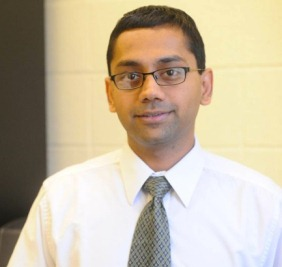

Kartik Chandran is an Environmental Engineer. He is currently Associate Professor of Earth and Environmental Engineering at Columbia University, where he leads the Columbia University Biomolecular Environmental Science program and the Wastewater Treatment and Climate Change program. Under his stewardship, the research directions of biological wastewater treatment and biological nitrogen removal were established for the first time ever in the history of Columbia University. Chandran is keenly interested in developing novel models for sustainable sanitation and wastewater treatment, with a specific focus on managing the global nitrogen cycle (one of the grand challenges of the National Academy of Engineering) and linking it to the carbon cycle, the water cycle and the energy cycle. Chandran has received, among other awards, the NSF CAREER award and the Paul Busch Award. He was the recipient of a 2007 National Academies of Science Fellowship and a guest professorship at the Delft University of Technology. In 2011, Chandran began implementing a novel model for sanitation in Africa, supported by the Bill & Melinda Gates Foundation. He also serves on the Board of Trustees of the Water Environment Federation.